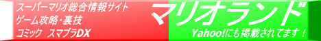

マリオランド 総合窓口
スーパーマリオに関するページ。
「マリオランド 総合窓口」について
「マリオランド」は、本サイトを2002年に開設した当初からのメインコンテンツで、当時は「ポケモンフリーク」と並んでメインメニューに載せていた。しかし2007年頃、ポケモンフリークとともに「Games」というカテゴリに統合した。
当時はコミックの「スーパーマリオくん」に関するコンテンツも取り扱ったりしていて、/mario/ ディレクトリを使っていたのだが、2019年、コレを再作成することにした。Games 配下の「マリオランド」と区別を付けるため、「総合窓口」などとテキトーな名前を付けている。
現在のカテゴリ上、Games 配下のコンテンツとはいえないので、Etc. 配下ということにしてある。
コンテンツリスト
今のところゲーム以外のコンテンツなし。ゲームに関する情報は、Games 配下にある「マリオランド」を参照。
昔作ったバナーを再掲。
-

- 